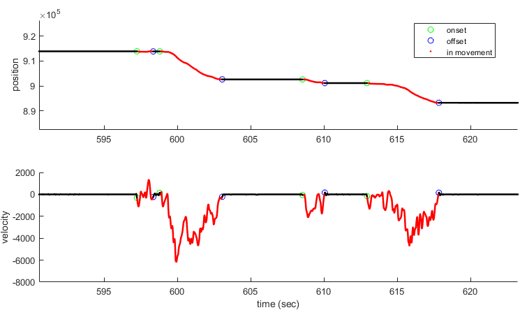

Working with wheel data
In the Burgess wheel task a visual stimulus is yoked to LEGO wheel via a rotary encoder. Below are some things to consider when designing or modifying a wheel task. For information on setting up the rotary encoder, see Hardware Configuration: DAQ rotary encoder. For information on wiring a rotary encoder for the Burgess steering wheel task, see the Burgess hardware setup instructions .
Contents
- The wheel input in Signals
- Load information about the wheel from the hardware file
- Load the wheel data
- Convert to linear displacement (cm)
- Convert to angular displacement (rad)
- Convert to angular displacement (RPM)
- Convert to angular displacement (deg)
- Convert to azimuth (visual degrees)
- Compute velocity and acceleration
- Detecting wheel movements
- Classifying wheel movements
- Event-triggered traces
- Notes
- Etc.
The wheel input in Signals
There are currently three wheel-related inputs used by the Signals Experiment class. These can be accessed via a subscripted reference(1) to the 'inputs' argument of an experiment definition function (expDef) :
- wheel - the raw value of the rotary encoder, polled on every iteration of the main experiment loop. Each time the rotary encoder moves suffeciently it sends out a pulse. These are integrated by a counter channel and the output is seen in the wheel signal. This Signal is zero'd at the beginning of the experiment.
- wheelMM - the wheel movement in units of centimetres linear displacement. That is the distance the wheel would have rolled along a flat surface. This Signal is zero'd at the beginning of the experiment.
- wheelDeg - the wheel movement in degrees. This Signal is zero'd at the beginning of the experiment.
The wheelMM and wheelDeg signals simply map the values of wheel through a function based on information found in the hardware file's mouseInput object, namely the 'WheelDiameter' and 'EncoderResolution' properties.
Load information about the wheel from the hardware file
For a given experiment you may wish to load the hardware used, and to view the settings for the rotary encoder. Each experiment, a JSON copy of the hardware file is saved to the main repository. This preserves the settings as they were at the time the experiment ran. The below code searches for this JSON file and tries to load it. If it doesn't exist, the current hardware file is loaded instead. Some information about the rotary encoder settings are the printed.
expRef = '2019-03-28_1_default'; % Example experiment jsonPath = dat.expFilePath(expRef, 'hw-info', 'master', 'json'); if exist(jsonPath, 'file') % Check is hardware JSON exists % If the JSON file exists load that as the wheel may have sinced changed rig = jsondecode(fileread(jsonPath)); else % Otherwise load the existing harware file rigName = 'exampleRig'; rig = hw.devices(rigName, false); end % Print some info: D = rig.mouseInput.WheelDiameter; res = rig.mouseInput.EncoderResolution; a = rig.mouseInput.MillimetresFactor; fprintf(['Details for experiment <strong>%s</strong>:\n'... 'Wheel diameter (mm): %.1f, '... 'encoder resolution: %d, '... 'calculated millimetres factor: %.4f\n'], expRef, D, res, a)
Load the wheel data
If availiable, load the auto-extracted ALF file as the data is quicker to load, in centimeters linear displacment units and resampled evenly at 1000Hz.
expPath = dat.expPath(expRef, 'main', 'master'); files = dir(expPath); Fs = 1000; % Frequency to resample at if any(endsWith({files.name}, 'wheel.position.npy')) fullFileFn = @(nm) readNPY(fullfile(expPath, endsWith({files.name}, nm))); pos = fullFileFn('wheel.position.npy'); % in cm rawT = fullFileFn('wheel.timestamps.npy'); % in sec vel = fullFileFn('wheel.velocity.npy'); % in cm/sec t = (rawT(1,2):1/Fs:rawT(2,2))'; else % Otherwise load from block file and preprocess data = dat.loadBlock(expRef); pos = data.inputs.wheelValues; % in samples tRaw = data.inputs.wheelTimes; % in sec % Resample values t = 0:1/Fs:tRaw(end); pos = interp1(tRaw, pos, t); % Correct for over-/underflow pos = wheel.correctCounterDiscont(pos); end
Convert to linear displacement (cm)
If the units are in samples (i.e. loaded from inputs.wheel or inputSensorPos), convert to units of centimetres linear displacement. That is the distance the wheel would have rolled along a flat surface.
posCM = (rig.mouseInput.MillimetresFactor/10) .* pos; % or alternatively res = rig.mouseInput.EncoderResolution*4; % Resolution * 4 for '4X' encoders D = rig.mouseInput.WheelDiameter/10; % Converted to cm from mm posCM = pos./res * pi * D;
Convert to angular displacement (rad)
For angular displacement / velocity, just divide by the wheel radius
posRad = posCM / 0.5*D; % in radians velAng = vel / 0.5*D; % in rad/sec
Convert to angular displacement (RPM)
Convert this to the more intuitive revolutions per minute:
RPM = velAng*60 / 2*pi;
Convert to angular displacement (deg)
For displacement in degrees:
posDeg = rad2deg(posRad);
velDeg = rad2deg(velAng);
% or...
posDeg = pos * res/360;
Convert to azimuth (visual degrees)
If you know the response threshold in visual degrees, you can convert this to visual degrees.
thresh = 35; % visual degrees azimuth % Position relative to interactive on pos = pos - pos(1); % Distance moved in whatever units dist = diff([pos(1) pos(end)]); % Convert to visual degrees moved, assuming correct is an element of [-1 0 % 1] posAzi = (pos/abs(dist) * thresh) - (sign(dist) * sign(correct) * thresh); velAzi = (vel/abs(dist) * thresh) - (sign(dist) * sign(correct) * thresh);
Compute velocity and acceleration
To compute the velocity we take the derivative of the position, convolving with a Gaussian smoothing window to remove large jumps between samples.
The position samples should be evenly sampled at a given rate (Fs). See section on loading the wheel data for more info.
The units of the window are in seconds, and the Rigbox wheel.velocity.npy ALF file is extracted using one of 0.03 seconds. Naturally, The velocity units are the derivitive of the position units, so if the input units are in linear cm, the output would be the tangential velocity in cm/sec. Likewise the acceleration units would be cm/sec^2.
NB: The outputs are both column arrays (Nx1)
smoothSize = 0.03; % Gaussian smoothing window
[vel, acc] = wheel.computeVelocity2(pos, smoothSize, Fs);
Detecting wheel movements
The wheel package contains functions for detecting and classifying movements. The wheel detection algorithm looks for sufficiently large changes in position over a given amount of time.
The default position threshold parameters are in samples and were chosen for data from a 1024 resolution rotary encoder acquired with 4X encoding.
A description of the algorithm and parameters can be found in the function help. The defaults are those used in the extraction of the wheelMoves ALF file.
help wheel.findWheelMoves3 % Load some test data [onsets, offsets, displacement, peakVelTimes, peakAmps] = ... findWheelMoves3(pos, t, Fs, 'makePlots', true);
[onsets, offsets, s, peakVelTimes, peakAmps] = findWheelMoves3(pos, t, Fs, params)
Algorithm: for each point, is there > posThresh max movement in the next tThresh seconds. If there is, then that tThresh window is part of a movement. Merge small gaps. Now for every time you go from not-moving to moving, jump ahead by tThresh and look backwards in time until you find a point that's very close to the starting point (different by < posThreshOnset). Finally, drop movements that are too brief.
Required Inputs:
pos : an array of wheel positions
t : an array of wheel sample timestamps
Fs : the sampling frequency used for linear interpolation Optional Parameters (may be struct or name-value pairs):
posThresh = 8 : if position changes by less than this
tThresh = 0.2 : over at least this much time, then it is a quiescent period
minGap = 0.1 : any movements that have this little time between the end
of one and the start of the next, we'll join them
posThreshOnset = 1.5 : a lower threshold, used when finding exact onset times.
minDur = 0.05 : seconds, movements shorter than this are dropped.
makePlots = false : plot position and velocity showing detected movements.
batchSize = 10000 : compute in batches of this size. The larger the
matrix the higher the memory use, but not by much. Must be >= length(pos). Outputs:
onsets : an array of detected movement onset times
offsets : an array of detected movement offset times
displacement : the total displacement of each movement
peakVelTimes : the time of peak velocity for each detected movement
peakAmplitude : the absolute maximum amplitude of each detected
movement, relative to onset position.
Classifying wheel movements
Wheel movements may be classified in a somewhat task-agnostic way using wheel.findWheelMoves. This function determines the response thresholds empirically, given the interactive start times and response times.
- `intStartTime` is the time that interactive period started
- `respTime` is the choiceworld-defined response time
- `resp` is the response type (1, 2, or 3). Typically, 1 is for 'choose left' responses, 2 for 'choose right', and 3 for 'no-go' or timeout trials.
Returned is an array of movement labels - values of 0-3. The extracted ALF file wheelMoves.type.csv encodes these values with the following labels:
- (0) other - A movment that was not sufficiently large enough to reach threshold
- (1) CW - A clockwise wheel movement that reached threshold
- (2) CCW - A counter-clockwise wheel movement that reached threshold
- (3) flinch - A movement that reached both thresholds in quick succession
moveType = wheel.classifyWheelMoves(...
t, pos, moveOnsets, moveOffsets, intStartTime, respTime, resp);
Event-triggered traces
wheel.eventTrigAvgAllTraces returns the mean and standard deviation of the wheel positions ('data') around each of the timestamps in 'events'.
This function differs from eventTrigAvg in that it will return you all snippets of the data around the events, rather than just the average and standard deviation. This makes it slower, and it can only work with one data trace at a time.
Inputs:
- data [1xN] - Continuous data trace(s) (e.g. LFP, eye position), N samples
- events [1xE] - List of E timestamps, in seconds
- window [1x2] - Times, in seconds, relative to the events that you're interested in. For example, to average data from 50ms prior to 200ms after each event, use window = [-0.05 0.2]
- Fs - Sampling frequency of data
[trace, stdev, allTraces] = wheel.eventTrigAvgAllTraces(data, events, window, Fs);
Notes
(1) e.g. 'inputs.foo'. This is know as dot notation. More info here.
Etc.
Author: Miles Wells
v1.0.1
%#ok<*NASGU>